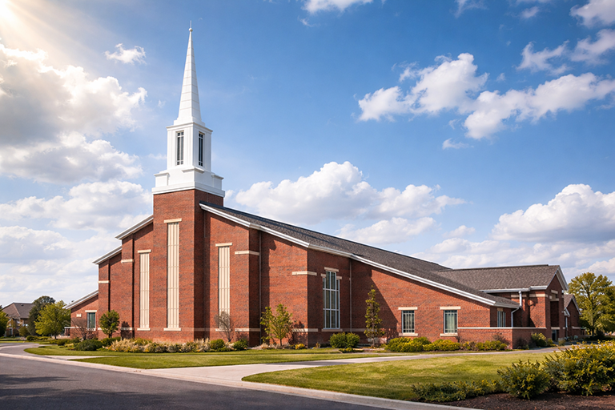

What to Expect on Sunday:
Sunday mornings are the heartbeat of our week. When you walk
through our doors, you can expect a vibrant atmosphere filled with
heartfelt worship and practical, biblical teaching that applies to
your everyday life. Our services typically last about 75 minutes,
featuring a blend of contemporary music and traditional elements.
Don't worry about a dress code—most of our members dress
casually, so please wear whatever makes you feel comfortable.
We would love to meet you in person! Join us this Sunday at 9:00am or 11:00am for our weekly worship service. If you have any questions before your visit, please feel free to reach out to our office or stop by the Welcome Center in the lobby when you arrive. No matter where you are on your spiritual journey—whether you are a lifelong believer or a curious skeptic—there is a seat waiting for you here.
When you arrive, friendly greeters will be happy to assist you, help you find seating, and answer any questions you may have. Families are welcome, and we offer age-appropriate ministry opportunities for children and youth so everyone can engage meaningfully in the service. Above all, our desire is for you to feel welcomed, encouraged, and uplifted as we worship together and grow in faith as one community.

Service Times
Sunday School: 8:00am & 10:00am
Sunday Early Bird Service: 6:00am
Sunday Morning Services: 9:00am & 11:00am
Our Address
6305 Allentown Rd
Camp Springs, MD 20768
Mailing Address
P.O. Box 867 Camp Springs, MD 20768
301-882-7770